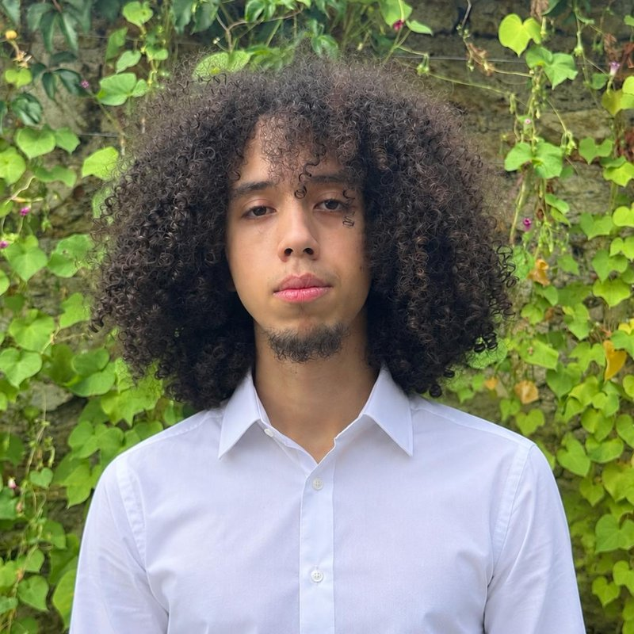

Oussama Denia
Étudiant en BTS SIO, spécialisé en administration systèmes, réseaux et sécurité.
J'aime comprendre comment un système fonctionne, le monter, le protéger puis le documenter.

À propos
Étudiant en BTS Services Informatiques aux Organisations (SIO), je me forme à l'administration système et réseau, à la virtualisation et à la sécurité des infrastructures.
En bref
BTS SIO
Aurlom BTS+Baccalauréat STI2D
Lycée polyvalent de CachanBrevet des collèges
Collège Pierre de RonsardCompétences
Ce que j'ai déjà installé, configuré et testé en cours, en stage et sur mes projets.
Systèmes
Administration de serveurs et de postes, en machines virtuelles.
Réseaux et sécurité
Segmentation, adressage, filtrage et détection d'intrusion.
Services et données
Déploiement de services de stockage et de partage de fichiers.
Développement
Scripts, programmation embarquée et pages web.
Outils
Montage vidéo et organisation du travail.
Savoir-être
Adaptabilité, esprit d'analyse, esprit d'équipe et communication.
Stages et engagement
Deux stages d'un mois en 2026 et un engagement bénévole régulier.
Stage cybersécurité, Novatiel
- Tests d'environnements conteneurisés avec Docker et Kubernetes.
- Mise en œuvre d'un système d'attaque-défense avec la plateforme Caldera.
Stage systèmes et réseaux, MartinsCie
- Déploiement d'environnements virtualisés (Windows Server, Linux).
- Mise en place des rôles AD DS, DNS et DHCP.
- Installation et paramétrage du pare-feu pfSense.
- Tests de configuration et rédaction de rapports.
Maraude, Efrei Aides Humanitaires
- Distribution alimentaire et vestimentaire.
- Convoi humanitaire.
Cisco et ISO 27005
- Introduction à la cybersécurité, Cisco Networking Academy (2026).
- Linux Unhatched, Cisco Networking Academy (2025).
- ISO 27005, gestion des risques en sécurité de l'information (en cours).
Projets
Des projets techniques, du capteur au serveur. Chaque projet a sa page détaillée, avec captures et explications.
Simulation Red Team vs Blue Team avec CALDERA
Déploiement du framework MITRE CALDERA sur 3 VM Debian et simulation d'attaque et de défense en 2 contre 2.
Voir le projetHéberger un site dans un conteneur Nginx
Création d'un Dockerfile, construction d'une image personnalisée et publication d'une page web sur localhost.
Voir le projetKubernetes avec Minikube
Installation de kubectl et Minikube, démarrage d'un cluster local et prise en main des commandes kubectl.
Voir le projetVeille technologique
Je suis l'actualité des menaces et des bonnes pratiques de cybersécurité pour garder mes compétences à jour.
Sujet suivi
Menaces, vulnérabilités et gestion des risques en sécurité de l'information.
Mes sources
À compléter avec vos sources réelles (ANSSI, CERT-FR, etc.) et un exemple d'article analysé.
Me contacter
Je réponds rapidement par e-mail.
07 60 27 53 70 · Paris / L'Haÿ-les-Roses